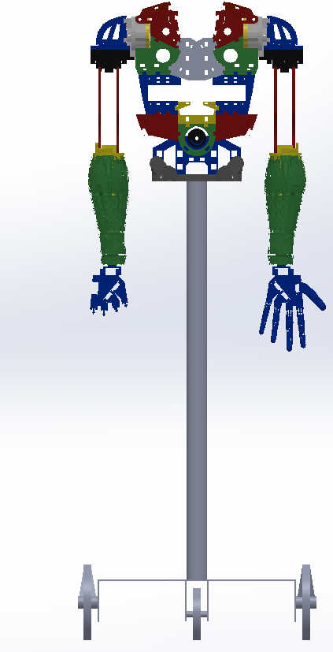

Mechatronics & Robotics Engineer
I build systems where mechanics, electronics, and software meet.
I am Karem Waled, an engineer based in Egypt with hands-on experience in robot
prototyping, embedded firmware, mechanical design, and technical education.
01 / HUMANOID SYSTEM

Graduation project
InMoov humanoid robot
ROBOT INTEGRATION
EMBEDDED C / C++
ROS & ROS 2
MECHANICAL DESIGN
PROTOTYPING
Selected work
Engineering projects with the decisions left visible.
Each case study focuses on the system, my contribution, and the evidence available.
Repositories include source code, engineering evidence, or scoped technical documentation.
01
Robotics · Graduation project · 2022
InMoov Autonomous Humanoid Robot
A team-built, 3D-printed humanoid platform combining a mobile base, articulated upper
body, embedded motor control, and experiments with ROS-based perception and planning.
- My focus
- Motion firmware, calibration, subsystem integration, and ROS experiments
- Tools
- Arduino, C++, ROS, OpenCV, URDF, MoveIt, SolidWorks
- Evidence
- Source code, CAD files, reports, presentation, and component studies
Embedded systems · NTI team capstone · Simulation
Advanced Driver Assistance System (ADAS)
A Proteus-simulated smart-drive system built around an STM32 controller, explicit operating
modes, distance sensing, line detection, motor actuation, warnings, and a Raspberry Pi
interface. The project explored embedded building blocks behind driver-assistance features.
- My focus
- Five-person team implementation; complete source and simulation preserved
- Tools
- STM32F4, Embedded C, UART, timers, ultrasonic and IR sensors, Proteus
- Architecture
- Layered drivers, application state machine, sensor inputs, and motor outputs
Mechanical design · Ongoing practice
CAD, Assemblies, and Design Documentation
A curated set of mechanical models covering machined parts, sheet metal, assemblies,
mechanisms, and production drawings. The public collection will show finished work,
design intent, and manufacturing considerations rather than raw practice files.
- Focus
- Part modeling, assemblies, drawings, mechanisms, and design communication
- Tools
- SolidWorks, Fusion 360, AutoCAD, rapid prototyping
Computer vision · Python experiments
Real-Time Object Detection
A set of practical experiments for detecting and labeling objects in images and video.
The available work explores OpenCV pipelines and pretrained SSD MobileNet and YOLO-family
models as a foundation for robot perception.
- Pipeline
- Frame capture, preprocessing, model inference, confidence filtering, and overlays
- Tools
- Python, OpenCV, TensorFlow models, YOLO configurations, COCO labels
- Next step
- Clean the scripts, pin dependencies, and document measured performance
Project archive
Additional systems and prototypes.
These projects are included to show the wider engineering path. Their descriptions are
documented from available source code, design files, photographs, videos, and test notes.
A / 01
IoT · Embedded web control
Smart Scooter Control
An ESP8266-hosted local interface for wireless control of scooter lighting and selected device functions, with firmware handling HTTP requests and hardware states.
ESP8266
Arduino C++
HTTP
Private archive repo
A / 02
IoT · Home automation
Connected Smart Home
A learning prototype connecting environmental sensors and household outputs to ESP-based controllers and remote dashboards for monitoring and control.
ESP32 / ESP8266
Sensors
IoT dashboards
Private archive repo
A / 03
Mobile robotics · Safety prototype
Firefighter Robot
A small mobile-robot concept combining flame or thermal sensing, motion control, and autonomous response logic for fire-detection demonstrations.
Embedded C/C++
Sensors
Motor control
Private archive repo
A / 04
Embedded systems · Driver development
AVR and STM32 Firmware Exercises
Reusable low-level practice covering GPIO, ADC, timers, interrupts, displays, keypads, communication interfaces, and layered embedded-software organization.
AVR
STM32
C / RTOS concepts
Open source archive
A / 05
Automation · Robotics R&D
Four Industrial & Educational Prototypes
Documented work on a PLC process station, DC-motor trainer, Raspberry Pi mobile robots, and interactive robotic-arm systems. My role covered R&D, assembly, and integration.
PLC
Raspberry Pi
System integration
Photos, videos & case studies
A / 06
Applied AI · Full-stack customer service
AI Customer-Service RAG Assistant
A human-in-the-loop WhatsApp assistant combining semantic retrieval, response generation, an Express API, PostgreSQL/pgvector, and a Flutter approval inbox.
Node.js
Flutter
RAG / pgvector
Source & tests
A / 07
Computer vision · Mobile application
AI Fitness Coach
A Flutter coach using on-device pose landmarks, joint-angle analysis, movement state machines, repetition counting, and bilingual real-time form feedback.
Flutter
ML Kit
Pose analysis
Source & tests
A / 08
Mobile systems · Sensor integration
Kingdom of Steps
A bilingual gamified pedometer integrating device step sensors, optional Health Connect history, local persistence, goals, streaks, and challenge concepts.
Flutter
Pedometer
Health Connect
Source repository
A / 09
Enterprise software · ERP workflows
Odoo Customer Service & Delivery Workflows
An anonymized case study covering a Customer 360 service workspace and a structured delivery/daily-work workflow with traceable records and review states.
Odoo
Python / XML
Process design
Anonymized case study
Engineering profile
A practical generalist, building toward deeper robotics research.
My background crosses mechanical design, embedded control, software, and teaching.
That breadth helps me understand complete systems while I deepen my knowledge of ROS 2,
SLAM, navigation, and machine learning.
Current learning: ROS 2 navigation, SLAM Toolbox, Nav2, and applied
machine learning. These are active study areas, not presented as expert-level skills.
01
Robotics integration
ROS fundamentals, URDF, robot subsystems, OpenCV experiments, and motion control.
02
Embedded systems
C/C++, STM32, AVR, Arduino, ESP32, RTOS concepts, sensors, actuators, and protocols.
03
Mechanical design
SolidWorks modeling, assemblies, drawings, rapid iteration, and prototype documentation.
04
Software & instruction
Python, Git, Linux, backend development, STEM instruction, and technical communication.
Experience
From prototypes and production drawings to firmware and teaching.
2026 — Present
Odoo ERP Software Developer
Developed customer-service and delivery/work-management modules using Python business logic, XML views, relational data models, workflow rules, and structured validation.
2025 — 2026
R&D Mechatronics Engineer · El Sewedy Engineering Industrial
Concept development, mechanical design, SolidWorks documentation, and rapid design iteration.
2024 — 2025
R&D Mechatronics Engineer · Bedo Innovation Education
Robotic manipulators, smart factory stations, motor control, sensors, PLC-based automation, and prototypes.
2024
Embedded Systems Intern · Appraid-Tech
Firmware and automation work using C, C++, Python, Git, sensors, actuators, and IoT gateways.
2022 — Present
Robotics & STEM Instructor / FLL Coach
Project-based instruction with Arduino, Raspberry Pi, ESP boards, embedded programming, and robotics challenges.
Education
Ain Shams University
B.Sc. in Mechatronics Engineering, 2017–2022
Graduation project: Excellent
Selected training
- 2023 NTI Embedded Software Intensive Diploma
- 2021 Embedded Systems Diploma, Edges for Training
- 2022 MATLAB Onramp